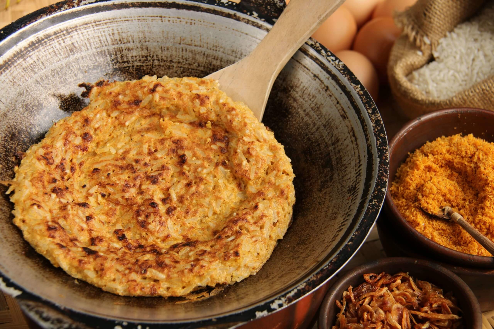
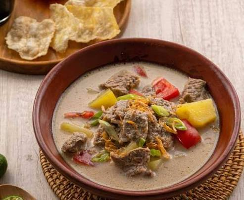
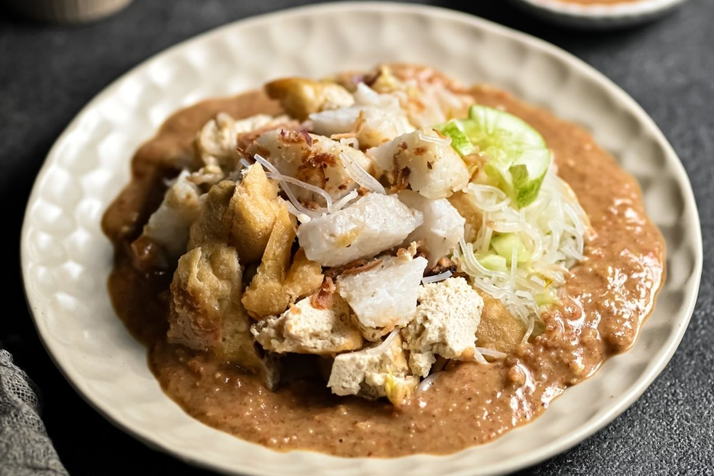

MUST TRY
Favorite foods

Kerak Telor 1
A traditional Betawi dish made from sticky rice, egg, shredded coconut, and savory spices. Kerak Telor is cooked until crispy and is known for its rich, authentic flavor.

Soto Betawi 2
A comforting Jakarta-style soup made with tender beef or offal in a rich, creamy broth. It is usually served with tomatoes, potatoes, and crispy shallots.

Ketoprak 3
A popular Indonesian street food made with rice cakes, tofu, bean sprouts, and vermicelli, topped with a flavorful peanut sauce. It is simple, fresh, and satisfying.
SCROLL ME
Food gallery
Try scrolling the phone screen to see more photos of my hometown's food! 📱